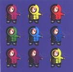

Home
Artist links
Label link

Marillion - Anoraknophobia
Artist:
Marillion
Title:
Anoraknophobia
Label:
Liberty 7243 532321 2 2
Length(s):
64 minutes
Year(s) of release:
2001
Month of review:
[07/2001]
Line up
Steve Rothery - guitar
Steve Hogarth - vocals
Mark Kelly - keyboards
Pete Trewawas - bass
Ian Mosely - drums
Tracks
1)
Between You And Me
6.27